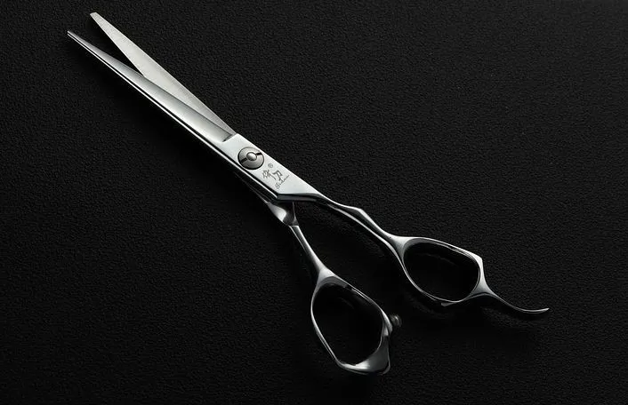
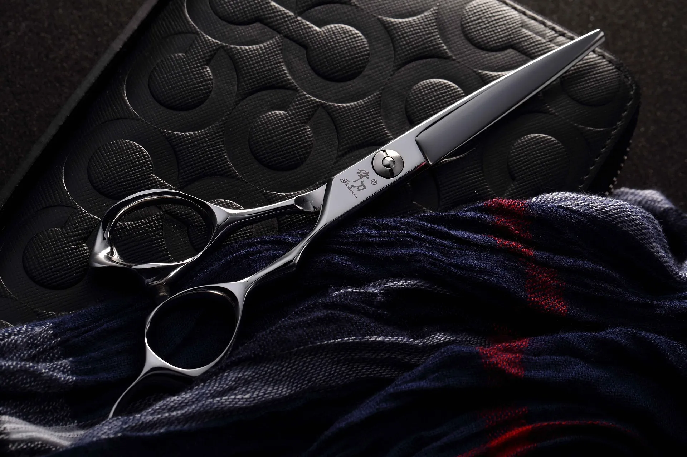
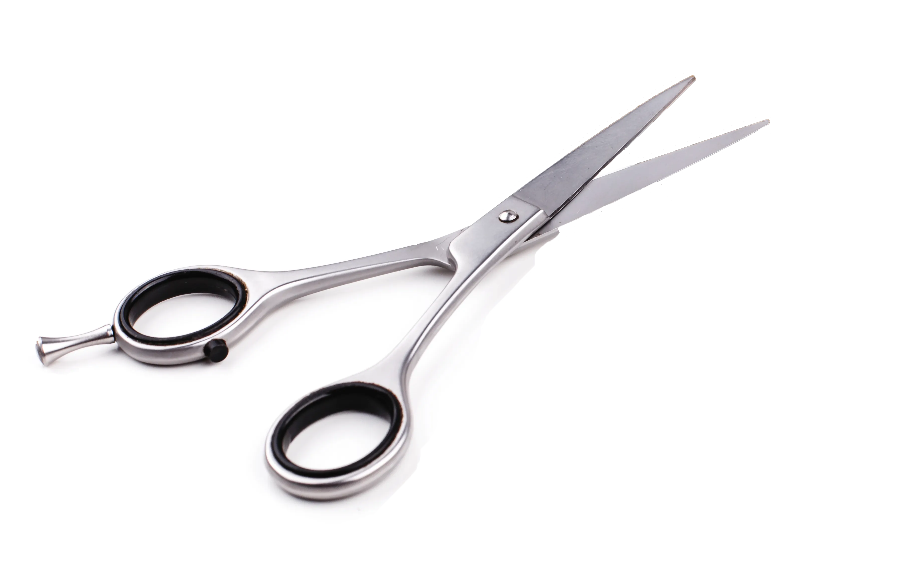

Repair by our specialists
Our qualified specialist submits your siceaux to a detailed examination in order to judge its condition and note the defect(s).


Repair and maintenance
Our qualified specialist submits your siceaux to a detailed examination in order to judge its condition and note the defect(s).
Your scissors
Our qualified specialist submits your siceaux to a detailed examination in order to judge its condition and note the defect(s)..
